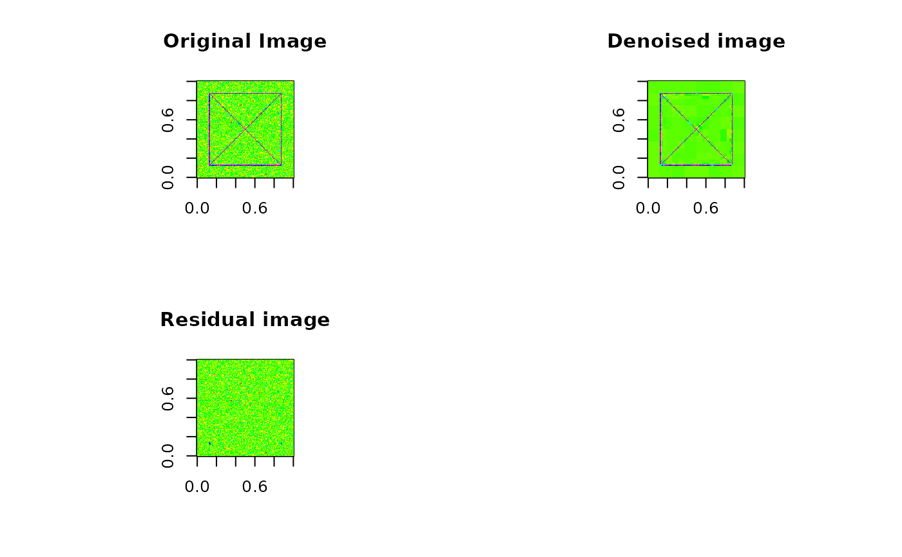
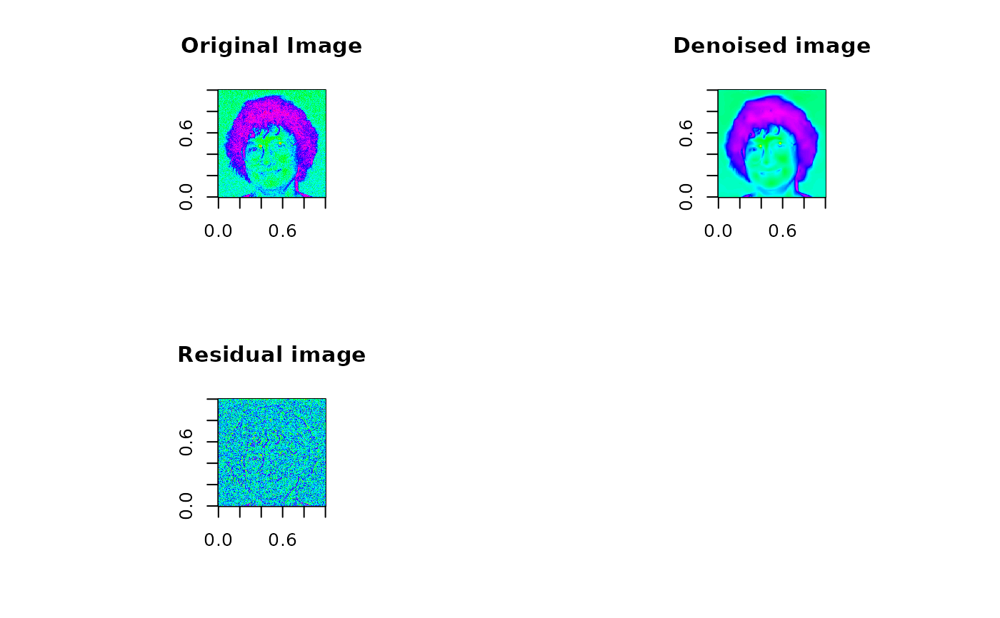

denoise.dwt.2d.RdPerform simple de-noising of an image using the two-dimensional discrete wavelet transform.
denoise.dwt.2d(
x,
wf = "la8",
J = 4,
method = "universal",
H = 0.5,
noise.dir = 3,
rule = "hard"
)input matrix (image)
name of the wavelet filter to use in the decomposition
depth of the decomposition, must be a number less than or equal to log(minM,N,2)
character string describing the threshold applied, only
"universal" and "long-memory" are currently implemented
self-similarity or Hurst parameter to indicate spectral scaling, white noise is 0.5
number of directions to estimate background noise standard deviation, the default is 3 which produces a unique estimate of the background noise for each spatial direction
either a "hard" or "soft" thresholding rule may be
used
Image of the same dimension as the original but with high-freqency fluctuations removed.
See Thresholding.
See Thresholding for references concerning
de-noising in one dimension.
## Xbox image
data(xbox)
n <- nrow(xbox)
xbox.noise <- xbox + matrix(rnorm(n*n, sd=.15), n, n)
par(mfrow=c(2,2), cex=.8, pty="s")
image(xbox.noise, col=rainbow(128), main="Original Image")
image(denoise.dwt.2d(xbox.noise, wf="haar"), col=rainbow(128),
zlim=range(xbox.noise), main="Denoised image")
image(xbox.noise - denoise.dwt.2d(xbox.noise, wf="haar"), col=rainbow(128),
zlim=range(xbox.noise), main="Residual image")
## Daubechies image
data(dau)
n <- nrow(dau)
dau.noise <- dau + matrix(rnorm(n*n, sd=10), n, n)
par(mfrow=c(2,2), cex=.8, pty="s")

image(dau.noise, col=rainbow(128), main="Original Image")
dau.denoise <- denoise.modwt.2d(dau.noise, wf="d4", rule="soft")
image(dau.denoise, col=rainbow(128), zlim=range(dau.noise),
main="Denoised image")
image(dau.noise - dau.denoise, col=rainbow(128), main="Residual image")
